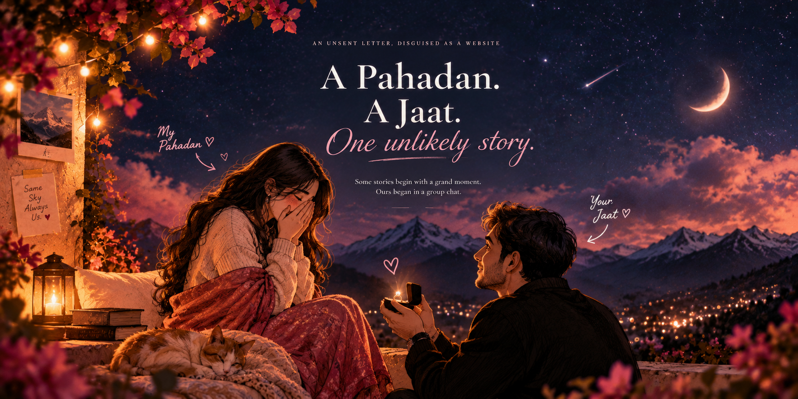

“How about we make it a movie date?”
P.S. Pahadi girl sounds way better than padhai girl.
Only one Pahadan has the key. 🌙
I kept some of us somewhere between the stars.
Some stories begin with a grand moment.
Ours began in a group chat.
There were messages, jokes, conversations — and then I said something I shouldn't have about your best friend.
Three months of silence can feel very long when one person keeps appearing in your thoughts.
And somehow it didn't feel like we started talking again.
It felt like someone pressed play.
P.S. Pahadi girl sounds way better than padhai girl.
Very on-brand for us: I say “Hey Cutie.” You say “Bhaago yha se.”
Kuch rishte naam maangte hain,
aur kuch bas dheere-dheere zindagi ka hissa ban jaate hain.
Humne naam kabhi diya nahi,
par tum kab meri aadat se meri zaroorat ban gayi… pata hi nahi chala.
Flowers, photographs, and the little moments from your birthday that I wanted to keep. I wanted your day to feel special, and I ended up loving the memories too.
No made-up stories. Just the photographs, emails, jokes and little moments exactly as I remember them.
I love photographs, but I love this more — because for a few seconds I get the movement, the noise, the version of us that a picture cannot hold.
No grand speech. Just one ordinary little piece of our life that I am very glad exists.
The eldest child. The responsible one. The girl studying for CAT while carrying expectations, plans, family, uncertainty — and still finding space to care about everyone else.
You are allowed to be tired.
You are allowed to not know what happens next.
You are more than an exam result.
You do not always have to be the responsible one.
I fell for the girl taking the exam.
Not the result that comes after it.
I know how much you're carrying right now — preparation, expectations, the pressure to make the next step count. So this little corner isn't here to tell you to “work harder.” You already do that. It's here to remind you to be kind to yourself while you do it.
Look at what went wrong, learn from it, and then let it go. A mock is information — not a verdict on you.
Eat. Drink water. Sleep properly. Take the break. Your brain is part of the preparation too, Pahadan.
You are allowed to take this one day, one chapter, one question at a time.
I believe in you — but my belief in you is not conditional on a percentile, an interview call, or a college name.
Study hard because you want the future you're working toward. But please don't punish yourself on the way there. I want to celebrate the result with you — whatever it is. More importantly, I want you to reach that day still knowing that you're already someone worth being proud of.
Now go solve VARC, DILR & QA.Chaand ko dekh kar tumhari yaad aaye, itni filmi kahaani hamari nahi.
Mujhe toh tum tab bhi yaad aati ho, jab saamne koi wajah hi nahi hoti.
I've lied to you. You've caught me. I've hurt you. And you've given me chances I didn't always deserve.
I can't rewrite those moments, and I won't use a beautiful website to pretend they didn't happen.
All I can do is choose honesty now — and let my actions become better than my apologies.
You made me a whole Boyfriend's Day presentation. So no, it was never going to survive here as an ordinary card. I turned your gift into its own little night sky.
Exactly a year ago, two people met in the most random way with absolutely no idea where it would take them.
Pretty solid character development, Pahadan. 😂We had fought. There was no proper plan. And somehow we still found our way back to each other — twice that day.
Later that night: JUST US.Study period 365 days & counting
Soft side detected in smallest ways ✓
Unresolved “okay” not permitted ✓
Annoying → funny in approx. 0.5 sec ✓
Aunty mode: unfortunately confirmed ✓
You wrote that I made you feel loved and celebrated, and that you'd remember the day with the biggest smile.
I would do it all over again just for that sentence.You noticed how hard I work and told me you were proud of me. That one stays with me more than you probably know.
Status: currently unavailable
Stock: 1 and only
Warranty: lifetime
Return policy: absolutely none
The random, messy, silly little moments became the best part. Not the polished version. The real footage.
You said I don't just leave when things get difficult — that I stay, try to explain, and don't let things remain uneasy.
I want my actions to keep making that true.Thank you for remembering details I didn't know you were storing. For roasting me and appreciating me in the same presentation. For noticing the work behind the things I'm proud of. For remembering July 5 with a smile. For keeping the random, messy footage instead of only the pretty parts.
And thank you for seeing a softer version of me even after seeing the difficult one too. I know I haven't always made that easy.
Aapki pyari pahadan
You already know I am not that. You have seen the good parts, the stupid parts, the mistakes, the apologies, the late-night version of me, and the version still learning how to love you better.
I want to be more honest than I have been.
I want to be someone you can feel safe trusting.
I want to celebrate your wins without making your difficult days feel smaller.
I want to keep choosing you on the boring Tuesdays too.
Not because our story has been perfect.
Because after everything, I still want the next chapter to have you in it.
Pahadan,
For two people who never officially decided what we were, we somehow became a lot.
So maybe it's time I stop leaving the most important thing unsaid.
— Jaat ❤️

We've fought like a couple.
Missed each other like a couple.
Made memories like a couple.
Cared like a couple.
Happy Boyfriend's Day to me, I guess. ❤️